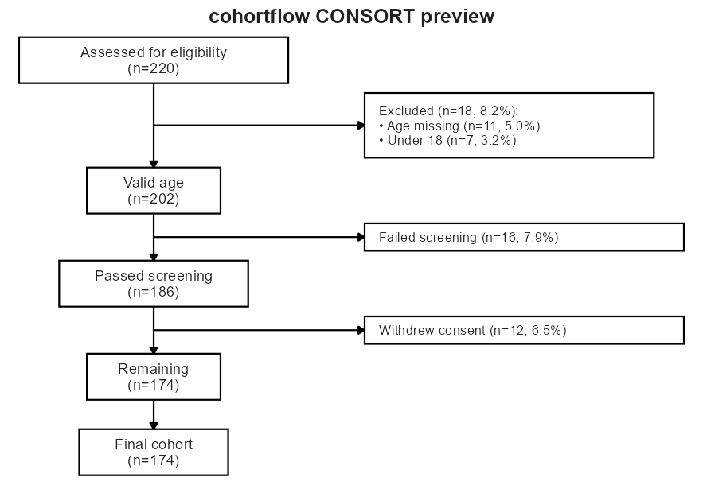
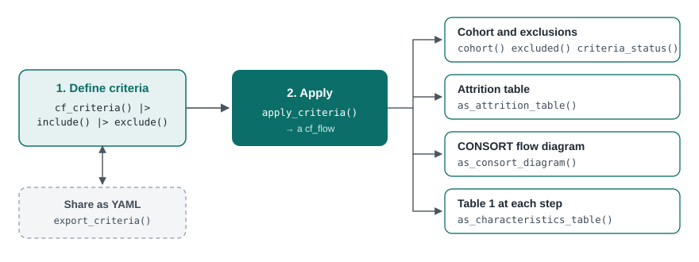

Define and apply inclusion/exclusion criteria for cohort studies, then generate transparent attrition outputs for reporting.
cohortflow helps you:
- Build readable criteria pipelines with formulas or functions
- Apply criteria step-by-step to a dataset
- Extract final cohort and excluded records
- Produce attrition tables as a tibble or formatted table (
flextable,gt,huxtable), including per-hierarchy-level CONSORT cluster reporting - Render a CONSORT-style flow diagram summarising participant flow, split by arm after randomisation
- Describe the cohort, or the people removed, at every step with a step-wise “Table 1”
- Export/import criteria pipelines as YAML for reproducibility
Documentation and worked examples: https://mattmoo.github.io/cohortflow/
Installation
Install the development version from GitHub:
# install.packages("remotes")
remotes::install_github("mattmoo/cohortflow")The table backends (flextable, gt, huxtable) are optional. To install them along with the package:
remotes::install_github("mattmoo/cohortflow", dependencies = TRUE)Check which build you have with packageVersion("cohortflow").
To install from a local copy of the source instead:
install.packages("path/to/cohortflow", repos = NULL, type = "source")Quick start
library(cohortflow)
# Example data (a parallel-group RCT). See also mock_crossover(),
# mock_cluster_rct(), and mock_stepped_wedge() for other study designs.
dat <- mock_parallel_rct(n_participants = 200, seed = 1)
# Define criteria pipeline
crit <- cf_criteria() |>
include(~ !is.na(age), label = "Age recorded", reason = "Age missing", category = "Age") |>
include(~ age >= 18, label = "Adults only", reason = "Under 18", category = "Age") |>
include(~ eligible_screen, label = "Passed screening", reason = "Failed screening") |>
exclude(~ withdrew, label = "Withdrew consent")
# Apply criteria
flow <- apply_criteria(dat, crit)
# Get the final cohort
final_dat <- cohort(flow)
# Get excluded rows with step metadata
excluded_dat <- excluded(flow)
# Plain attrition data
attr_tbl <- as_attrition_tibble(flow)
# Formatted attrition table
ft <- as_attrition_table(flow, backend = "flextable")
# CONSORT flow diagram
diagram <- as_consort_diagram(flow)
print(diagram)
# Save it for a manuscript (format from the extension; sized to fit the layout)
save_consort_diagram(diagram, "consort.pdf")
save_consort_diagram(diagram, "consort.png", dpi = 300)Visual output
Example CONSORT flow diagram generated from as_consort_diagram(flow):

CONSORT diagram preview
Learn more
The package website has the full function reference and these articles:
- Get started: one trial from raw data to diagram, table and YAML.
- Writing criteria: formula and function predicates, categories, missing values, grouped steps and the randomisation point.
- Attrition tables: the three table backends, site-by-period grids, shading and arm columns.
- CONSORT diagrams: styling, per-arm cascades after randomisation, crossover periods and saving figures for journals.
- Describing who was excluded: step-wise Table 1, overlapping exclusion reasons and gtsummary.
- Staged pipelines and missing units: units with no record, two-stage eligibility and intermediate cohorts.
- Hierarchical and cluster designs: clusters and participants counted side by side (CONSORT cluster extension).
- Study design gallery: parallel, crossover, cluster and stepped-wedge trials end to end.
Package workflow at a glance

cohortflow workflow: define criteria, apply them, then report
License
MIT. See LICENSE.